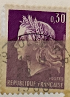
| SOURCE | TITLE| IMAGE MATCH | click to source page |
| midi-france.info | French National Symbols: Marianne | 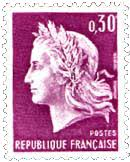 |
| eBay | FRANCE 1967 30c bright purple SG1768 used NG Republique a ##W45 | eBay | 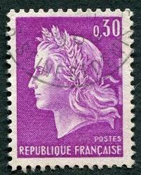 |
| Etsy | Two Vintage- 1968- Rare France Postal Stamps-marianne of Chaffee 0.30 - Etsy | 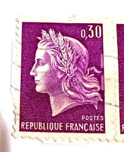 |
| HipStamp | Products from 'ozzy1' in Europe > France & Colonies / HipStamp | 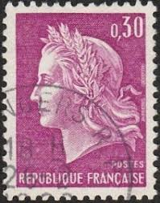 |
| Etsy | Zwei Vintage- 1968- Seltene Frankreich Briefmarken-Mrianne von Chaffee 0,30 - Etsy Schweiz | 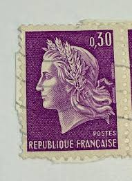 |
| Etsy | Rare French Stamps - Etsy | 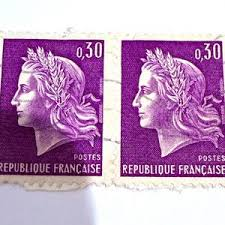 |
| Shutterstock | France Ca 1969 French Postage Stamp Stock Photo 173246744 | Shutterstock | 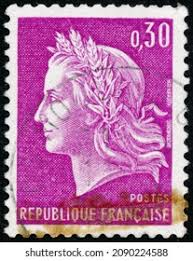 |
| Alamy | France Postage Stamp - Marianne of Cheffer Stock Photo - Alamy | 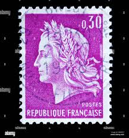 |
| Bonjour mes amis, I came across these French stamps among some stamps I was given a long time ago. Any French stamp buffs out there who could have a look at them | 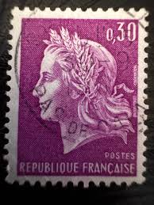 | |
| HipStamp | France #1198 Marianne; Used | Europe - France & Colonies, General Issue Stamp / HipStamp | 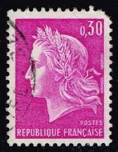 |
| Etsy | Zwei Vintage- 1968- Seltene Frankreich Briefmarken-Mrianne von Chaffee 0,30 - Etsy.de | 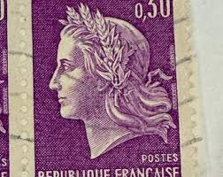 |
| iStock | French Postage Stamp Marianne De Cheffer Stock Photo - Download Image Now - Mail, No People, Old-fashioned - iStock | 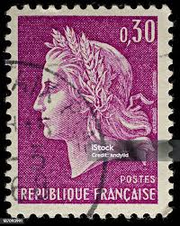 |
| Alamy | Marianne of Cheffer Stock Photo - Alamy | 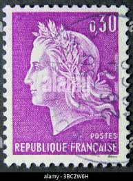 |
| Shutterstock | 3+ Thousand "french Postal Service" Royalty-Free Images, Stock Photos & Pictures | Shutterstock | 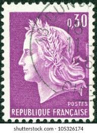 |
| Shutterstock | 1,979 Marianne France Royalty-Free Images, Stock Photos & Pictures | Shutterstock | 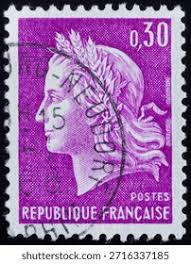 |
| Shutterstock | 1+ Thousand Postal Emblem France Royalty-Free Images, Stock Photos & Pictures | Shutterstock | 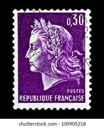 |
| Alamy | Cheffer hi-res stock photography and images - Alamy | 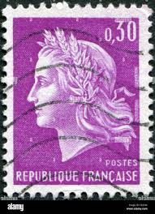 |
| Tumblr | Stamp collection — France, Marianne Stamp, c.1960s | 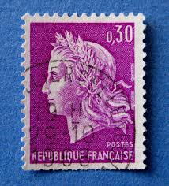 |
| Amazon.com | Amazon.com: France 1602-1603 (Complete.Issue.) unmounted Mint/Never hinged ** MNH 1967 Marianne (Stamps for Collectors) : צעצועים ומשחקים | 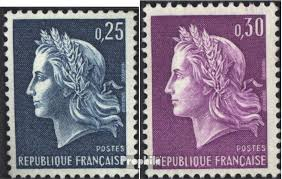 |
| Dreamstime.com | 247 Marianne Circa Stock Photos - Free & Royalty-Free Stock Photos from Dreamstime | 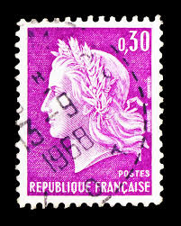 |
| Dreamstime.com | New Collection of Women S Swimwear in Milan. Editorial Image - Image of boutique, fashion: 320202120 | 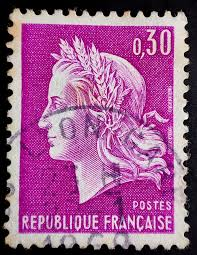 |
| esam.ir | تمبر کلاسیک فرانسه | 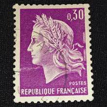 |
| 麦稀奇 | 法国邮票- 泡泡堂外币- 泡泡堂外币- 麦稀奇 | 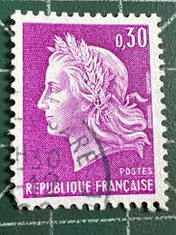 |
| eBay | Rare vintage postal stamp | eBay | 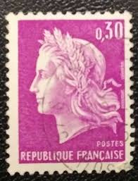 |
| jfbphilatelie.com | JF-B PHILATELIE - Expertise, Estimations, Organisation de Ventes | 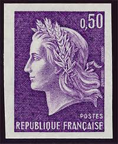 |
| Shutterstock | 1,792 Republic Of France Stamp Royalty-Free Images, Stock Photos & Pictures | Shutterstock | 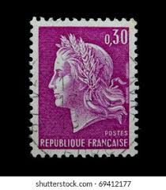 |
| sellosmundo.com | Posts French Republic. France Europe ref. 160 | 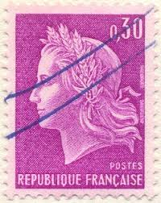 |
| eBay | Frankreich_1967 Mi.Nr. 1603 Marianne | eBay | 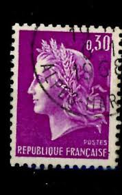 |
| Shutterstock | Liberté Égalité Fraternité: Over 1,526 Royalty-Free Licensable Stock Photos | Shutterstock | 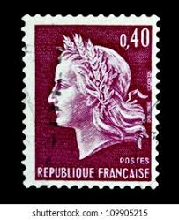 |
| esam.ir | آستم 25 __ تمبر کلاسیک فرانسه | 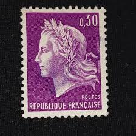 |
| Shutterstock | 89+ Thousand France Vintage From Postage Stamp Royalty-Free Images, Stock Photos & Pictures | Shutterstock | 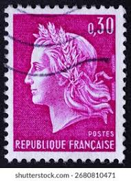 |
| iStock | Queen Elizabeth Ii Stamp Poster Stock Photo - Download Image Now - Postage Stamp, Canada, Elizabeth II - iStock | 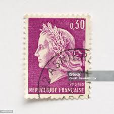 |
| Dreamstime.com | Turkey vs France stock photo. Image of flag, international - 228270796 | 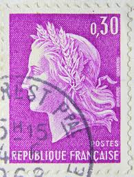 |
| Azur Philatélie | Stamps - France - Varieties - 1964 - Nb 1432b | 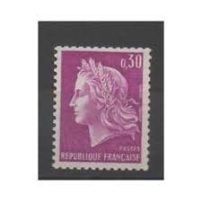 |
| Dreamstime.com | French stamp with Marianne editorial image. Image of franc - 210312235 | 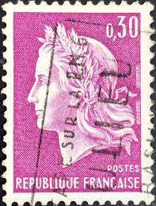 |
| Vincennes Philatélie | France Carnets d'usage courant Prix Courant – Vincennes Philatélie | 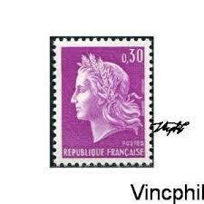 |
| Alamy | Marianne, postage stamp, France, 1967 Stock Photo - Alamy | 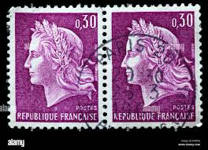 |
| eBay UK | France 1967-69 SG1768 30c Bright purple used | eBay UK | 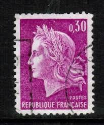 |
| iStock | French Postage Stamps Stock Photo - Download Image Now - 2015, Collection, Europe - iStock | 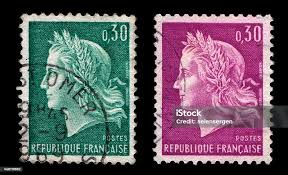 |
| Dreamstime.com | Wonderful French Restaurant,Le Relais Du Louvre, Paris, France, 2016 Editorial Photography - Image of background, dining: 70288102 | 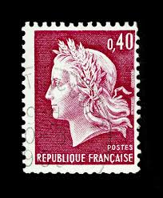 |
| Etsy | Due francobolli postali rari francesi d'annata del 1968 - Marianne di Chaffee 0,30 - Etsy Italia | 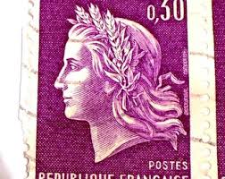 |
| Pixers | Sticker Marianne, République française, timbre postal. 1970 - PIXERS.CA | 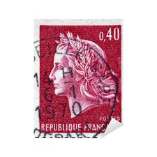 |
| esam.ir | تمبر ارزشمند و قدیمی جمهوری فرانسه | 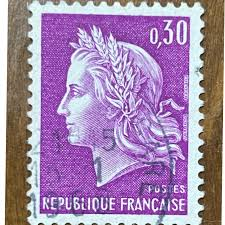 |
| Todocolección | serie 2 sellos francia 1967 › marianne of cheff - Acquista Francobolli antichi di Francia su todocoleccion | 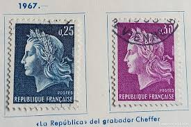 |
| Alamy | FRANCE - CA. 1969: A stamp printed in France ca. 1969 showing the image of Marianne a national emblem of France and an allegory of liberty and reason Stock Photo - Alamy | 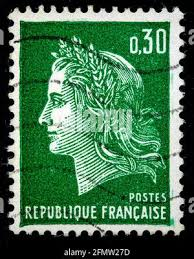 |
| Find Your Stamps Value | Value of republique francaise 20f stamps | 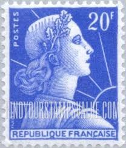 |
| HipStamp | France 1230 - Used - 30c Marianne (1969) | Europe - France & Colonies, General Issue Stamp / HipStamp | 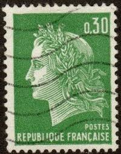 |
| eBay | France - 1969 - 0,40Fr - New Values - #17918 | eBay | 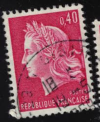 |
| HipStamp | France 1230: 30c Marianne, used, F-VF | Europe - France & Colonies, General Issue Stamp / HipStamp | 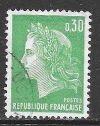 |
| eBay | France 1969 MNH Mi 1649 IIx-1650x Marianne *** | eBay | |
| WikiTimbres | Timbre : 1967 Sans légende particulière - type Marianne de Cheffer | WikiTimbres | |
| Dreamstime.com | Stamped old French stamps editorial image. Image of stamp - 109550505 | |
| alamyimages.fr | FRANCE - 1967 : timbre imprimé en France, présente le roi Philippe II (Philippe Auguste) à la bataille de Bouvines Photo Stock - Alamy | |
| 123RF | La France Renaissante Stock Photos and Images - 123RF | |
| Shutterstock | Moscow Russia Circa January 2016 Post Stock Photo 368203352 | Shutterstock | |
| iStock | French Stamp Marianne Stock Photo - Download Image Now - Adult, Adults Only, Black Background - iStock | |
| iStock | Vintage Antique Old Postage Stamp From France Stock Photo - Download Image Now - France, Postage Stamp, Antique - iStock | |
| PicClick UK | 2 X REPUBLIQUE Francaise Postes Paris Coat Of Arms 0.30 Postage Stamp 1965-69 £9.19 - PicClick UK | |
| Dreamstime.com | Old green french stamp editorial photo. Image of mail - 6957576 |